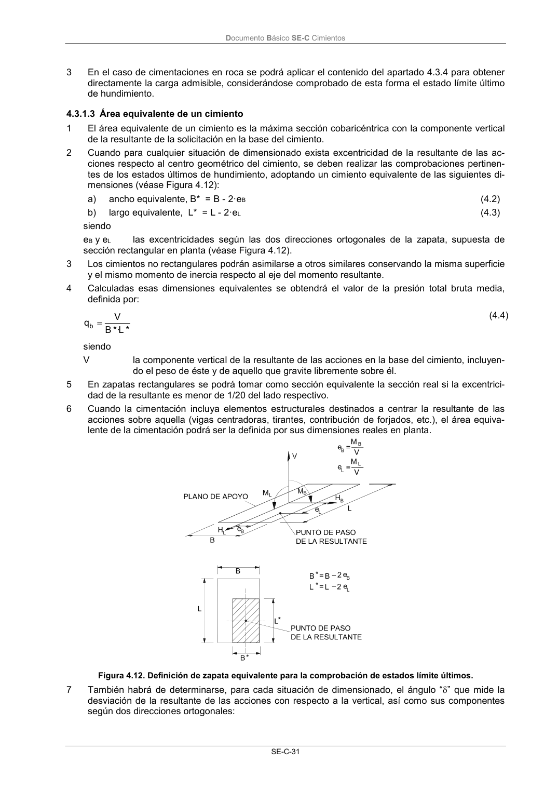

DB-SE-C · 4.3.1.3 Área equivalente de un cimiento · versión 2019-12-20 · capa oficial
Formatos: JSON compacto · Markdown · PDF fuente
Ámbito del documento · texto del ámbito · documento y tablas
ID técnico a0072 · PDF pág. 36 · jerarquía no validada por persona · contrastado con el literal de la página 36 (candidato tipográfico); no validado por persona · padre: raíz
4.3.1.3 Área equivalente de un cimiento 1 El área equivalente de un cimiento es la máxima sección cobaricéntrica con la componente vertical de la resultante de la solicitación en la base del cimiento. 2 Cuando para cualquier situación de dimensionado exista excentricidad de la resultante de las ac- ciones respecto al centro geométrico del cimiento, se deben realizar las comprobaciones pertinen- tes de los estados últimos de hundimiento, adoptando un cimiento equivalente de las siguientes di- mensiones (véase Figura 4.12): a) ancho equivalente, B* = B - 2·eB (4.2) b) largo equivalente, L* = L - 2·eL (4.3) siendo eB y eL las excentricidades según las dos direcciones ortogonales de la zapata, supuesta de

PDF fuente redistribuible: copia fiel enlazada en esta página (SHA256 verificado).